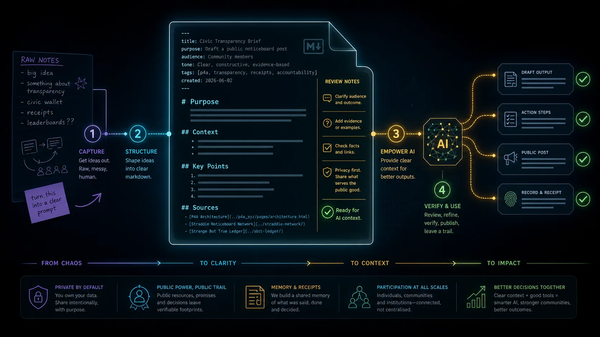

1. Purpose
Tell the AI what this file is for. Keep it plain: "draft a public notice", "prepare a grant question", "map my project", or "summarise a source trail".
Markdown is not magic. It is a simple way to give an AI agent a clean room to work in: what matters, what is private, what needs checking and what output would actually help.

A strong AI-ready Markdown file usually does six simple jobs. First it names the purpose. Then it gives context. Then it draws privacy boundaries. Then it asks for a clear task. Then it provides source links. Finally it leaves room for review and correction.
Tell the AI what this file is for. Keep it plain: "draft a public notice", "prepare a grant question", "map my project", or "summarise a source trail".
Add the background that would save a human from asking the first five obvious questions.
Name what is public, private, trusted-only, draft, uncertain or not for publication.
Ask for one useful next action. A file can hold many notes, but the request should stay crisp.
Links, dates, file names, screenshots and quotes tell the AI what to check before it sounds confident.
Add questions, risks, corrections and human approval notes so the output can improve over time.
Modern AI tools increasingly use Markdown files as instructions, not just notes. `AGENTS.md` can tell a coding agent how to work inside a repo. `SKILL.md` can describe a reusable capability, examples, scripts and guardrails. The important lesson for beginners is simple: a Markdown file can become memory, instructions and workflow in one readable place.
That is why form-generated `.md` files matter. A form slows the thinking down just enough to ask better questions. The downloaded file then gives the AI structure it can reuse.
---
schema: public_noticeboard.v0
status: draft_for_human_review
visibility: public_draft
reviewer: "Human owner or steward"
---
# Purpose
Draft a clear public notice about a local event.
## Context
- The event is family-friendly.
- The date may change if the weather turns.
- Contact details need approval before publication.
## Request For AI
Create three short notice versions:
1. Wall screen
2. Phone post
3. Plain text fallback
## Source Links
- Official event page
- Venue update
## Must Not Publish
- Private phone numbers
- Names of children
- Unconfirmed ticket details
## Review Notes
- Check date and time.
- Ask organiser before posting.Before you paste a `.md` file into AI, ask: